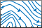
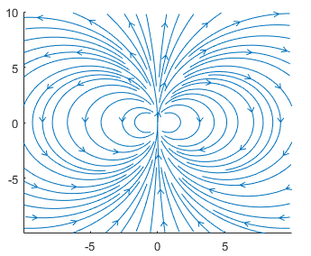

streamslice
Plot streamlines in slice planes
- 
Syntax
Description
streamslice(___, modifies
the automatic spacing of the streamlines, where density)density is a positive
scalar. The default value is 1. Higher values produce more streamlines on
each plane. For example, 2 produces approximately twice as many
streamlines as the default, while 0.5 produces approximately half as
many.
streamslice(___,, where
arrowsmode)arrowsmode is 'noarrows', does not draw direction
arrows. The default for arrowsmode is 'arrows',
which draws direction arrows. Use this option with any of the input arguments from the
previous syntaxes.
streamslice(___, specifies
the interpolation method, where method can
be method)'linear', 'cubic',
or 'nearest'.
streamslice( plots into the
specified axes, instead of into the current axes object (ax,___)gca).
Examples
Load the wind dataset, which loads the 3-D arrays u, v, w, x, y, and z, representing air currents over regions of North America. Draw streamlines along the slice plane where z = 5.
load wind streamslice(x,y,z,u,v,w,[],[],5) axis tight

Load the wind dataset and draw streamlines without direction arrows along the slice plane where z = 5.
load wind streamslice(x,y,z,u,v,w,[],[],5,'noarrows') axis tight

Load the wind dataset and draw streamlines along the slice plane, where z = 5. Use a density value of 2 to draw approximately twice as many streamlines as the default.
load wind streamslice(x,y,z,u,v,w,[],[],5,2) axis tight

Load the wind dataset and compute the vertices of streamlines along the slice planes, where z = 1, 5, and 10.
load wind
[verts, ~] = streamslice(x,y,z,u,v,w,[],[],[1,5,10]);Pass the vertices to streamtube to visualize the lines as tubes.
streamtube(verts,1) view(3) axis tight shading interp camlight lighting gouraud

Plot streamlines and store the returned Line objects in l.
[x,y] = meshgrid(-10:10);
u = 2.*x.*y;
v = y.^2 - x.^2;
l = streamslice(x,y,u,v);
axis tight
Set the line width of the streamlines to 2. Set their color to red. Use the set function to change the properties of all the streamlines at the same time.
set(l,'LineWidth',2) set(l,'Color','r');

First, create a surface plot.
z = peaks;
surf(z);
shading interp;
Compute the two-dimensional gradient of z. Use the x and y components as the vector data input for streamslice. Set the color of the streamlines to black.
[u,v] = gradient(z); l = streamslice(u,v); set(l,'Color','k');

Displace the streamlines on the z-axis so that they are drawn on the surface of the curve.
for i=1:length(l) zi = interp2(z,l(i).XData, l(i).YData); l(i).ZData = zi; end

Input Arguments
Output Arguments
Extended Capabilities
Version History
Introduced before R2006aWhen you create a streamslice plot, MATLAB automatically assigns colors and line styles the same way as for most other
plots. For example, the first set of lines are now a soft blue color.
[x,y] = meshgrid(-10:10);
u = 2.*x.*y;
v = y.^2 - x.^2;
slicelines = streamslice(x,y,u,v);
axis tight
If you call the streamline function repeatedly, subsequent plots
cycle through the same set of colors as other plots do. In previous releases, the lines were
bright blue.
To preserve the appearance from previous releases, use the set
function to set the Color property to [0 0
1].
set(slicelines,Color=[0 0 1])

See Also
contourslice | slice | streamline | volumebounds | meshgrid | interp3 | interp2 | streamribbon | streamtube